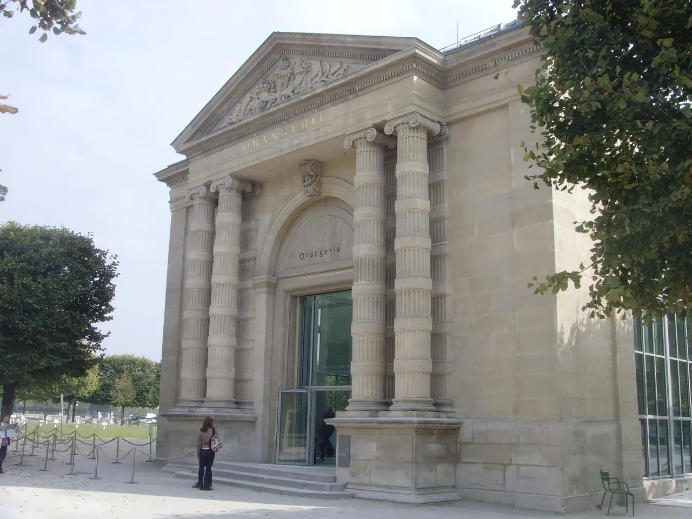

{kind=link}

BnF Richelieu
프랑스 국립도서관의 옛 본관이다.

| 운영시간 | 재확인 |
|---|---|
| 휴무 | 재확인 |
| 요금 | 재확인 |
| 예약 | 재확인 |
| 메모 | 'Monet, painting time' 2026/9/30–2027/1/25 · 금 18시부터 야간 €10 단일가 |
2026년 9월 30일부터 2027년 1월 25일까지 「모네, 시간을 그리다」가 열린다. 사망 100주년을 맞아 지베르니 화가의 빛에 대한 탐구를 기린다.
오랑주리에는 수련 연작이 상설 설치돼 있다. 거기에 100주년 특별전이 더해진다.
튈르리 정원 끝의 오렌지 온실이던 건물에, 모네가 1차대전 종전 기념으로 국가에 기증한 「수련」 대작 8면이 타원형 두 방에 설치돼 있다 — 화가가 전시 공간의 형태까지 지정해 남긴, 사실상 설치미술의 원형이다. 자연광이 천창으로 내려오는 정오 전후가 이 방의 최적 시간대다. 지하의 발터-기욤 컬렉션(르누아르·세잔·루소·모딜리아니)은 덤이라기엔 밀도가 높아, 수련 30분 + 지하 40분의 배분이 맞다. 시간지정권은 늦은 오전 슬롯이 낫다.
📍 (fondation-monet.com 접속 실패 ECONNRESET (S2·S4)) · 🕐 (fondation-monet.com 접속 실패 (2회 시도)) · 휴무 (fondation-monet.com 접속 실패 (ECONNRESET / ECONNREFUSED, 2회 시도)) · (fondation-monet.com 접속 실패 (2회 시도))
Day 41의 선택이다.
| A. Giverny | B. Orangerie | |
|---|---|---|
| 무엇 | 모네가 그린 정원 | 모네가 그린 그림 |
| 이동 | 반나절 이상 | 지하철 |
| 날씨 | 좌우된다 | 무관 |
| 2026 특별성 | 평시와 같음 | 100주년 전시 |
| 피로 | 크다 | 작다 |
43일 중 41일차다. 체력이 판단 기준이 될 가능성이 높다. 그리고 2026년에는 B안의 가치가 평소보다 크다. 100주년 전시는 내년에 없다.
프랑스 국립도서관의 옛 본관이다.

옛 곡물거래소를 안도 다다오가 개조한 현대미술관이다

25.6 Centre Pompidou 대체로 두었다.

모네가 정원을 만들고 수련을 그린 마을이다.

폴 세잔이 한 세기가 넘는 예술 창작에 끼친 예외적 영향을 탐구하는 전시다.

'라틴'은 학생들이 라틴어로 말하던 동네라는 뜻이다